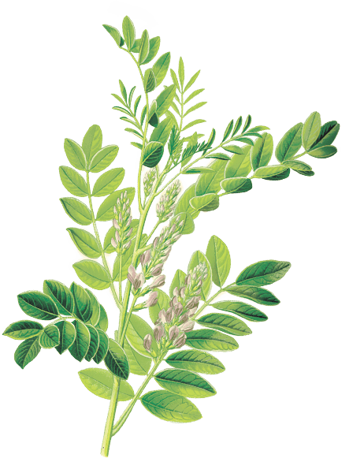

Gak semua orang tahu kalau
BATUK ITU
BATUK ITU
BUKAN PENYAKIT
Batuk adalah respon alami tubuh untuk melindungi tubuh terhadap benda asing (kuman, bakteri, virus) yang masuk ke dalam tubuh
terdapat
2 JENIS
BATUK
yaitu batuk berdahak
dan batuk tidak berdahak
BATUK TIDAK BERDAHAK
disebabkan oleh terjadinya kejang pada saluran pernapasan yang menjadi respon terhadap iritasi di tenggorokan.
BATUK BERDAHAK
disebabkan karena membran pada saluran pernapasan menghasilkan dahak yang berlebih sehingga harus dikeluarkan oleh tubuh. Terkadang dahak sulit dikeluarkan oleh tubuh sehingga dibutuhkan obat batuk yang bersifat ekspektoran.
Succus
Liquiritiae
merupakan salah satu bahan alami yang telah dibudidayakan sejak abad ke-13 dan dipercaya sebagai bahan dasar obat-obatan alami maupun modern.
